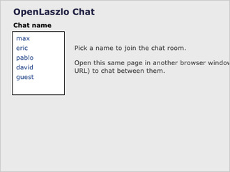

This application opens in a window. If you don't see it, you may need to bring that window to the front.
A real-time, multi-user chat room. Pick a name to join, then open this same page in a second browser window (or share the URL with someone else) to chat between them.
Chat is built on OpenLaszlo's persistent connection (the LzConnection
service), which lets a server push messages to every connected client. OpenLaszlo only ever
shipped this feature for the Flash runtime; here it has been rebuilt for DHTML over a
dependency-free WebSocket server, so the same LZX application now works
in the browser with no plugin.